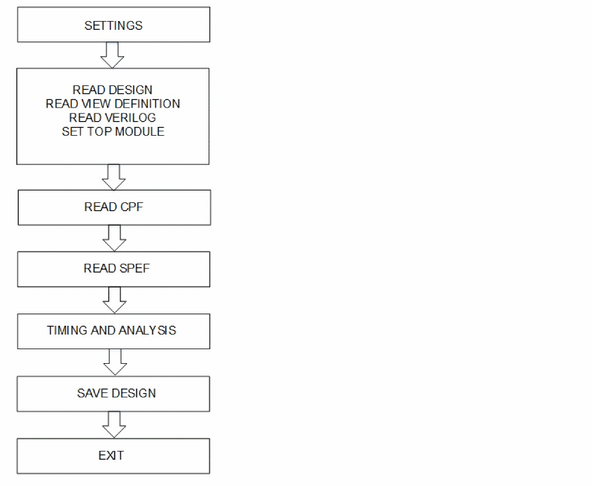
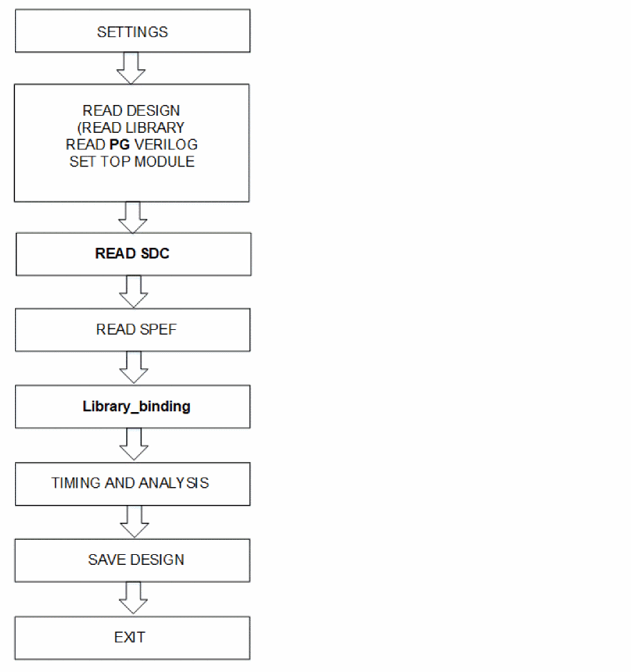

Low Power Flow
The Low Power flow is described below for CPF and PG Verilog (PGV):
Low Power Flow for CPF
The below flow shows the steps for setting-up Tempus using the CPF file:
Figure -1 Low Power Flow for CPF

Sample CPF File Script
You can use the following settings for Tempus using the CPF file:
-
Specify the number of CPUs to enable multi-threading:
set_multi_cpu_usage -local_cpu n
-
Load the design data:
read_mmmc <abc. tel>
-
Load the libraries:
create_library_set
-
Create RC and Delay calculation corners:
create_rc_corner
create_delay_corner
-
Group SDC constraints files
create_constraint_mode
-
Create an analysis view object that associates a delay calculation corner with a constraint mode.
create_analysis_view
-
Set the analysis views used for setup and hold analysis:
set_analysis_view
-
Schedule reading of structural gate-level Verilog netlist:
read_verilog <abc.v>
-
Set the top module name, and check for consistency between the Verilog netlist and timing libraries:
set_top_module <abc>
-
Specify the CPF file, which contains the power domain definitions:
read_power_intent -cpf <xyz.cpf>
-
Load the cell parasitics:
read_spef -rc_corner
-
Run a full timing update for the current design:
update_timing -full
-
Generate a report of all defined views in the design:
report_analysis_views
-
Specify the instance(s) for which the report is to be printed.
report_instance_library <instance>
-
Report the cell voltage or net timing arc.
report_delay_calculation -voltage
-
Generate the timing report:
report_timing
-
Save the design:
save_design -overwrite
-
Exit the design:
exit
Low Power Flow for PGV Flow
The following figure shows the steps for setting up Tempus using the PGV flow:
Figure -2 Low Power Flow for PGV

Sample PGV Flow Script
You can use the following settings for Tempus using the PGV flow:
-
Specify the number of CPUs to enable multi-threading:
set_multi_cpu_usage -localCpu n
-
Read the library file.
read_libs < >
-
Schedule reading of structural gate-level Verilog netlist:
read_verilog <PG verilog.v>
-
Set the top module name, and check for consistency between the Verilog netlist and timing libraries:
set_top_module <abc>
-
Load the timing constraints file:
read_sdc < >
-
Load the cell parasitics:
read_spef -rc_corner
-
Initiate power intent inference and library binding:
set_lib_binding_by_voltage -power_net_voltages
-
Run a full timing update for the current design:
update_timing -full
-
Generate a report of all defined views in the design.
report_analysis_views
-
Report the library-related information for an instance:
report_instance_library <instance>
-
Report the voltage of the cell or net timing arc
report_delay_calculation -voltage
-
Generate the timing report:
report_timing
-
Overwrite the previously saved session with a new session:
write_db -overwrite
-
Exit the design:
exit
Return to top